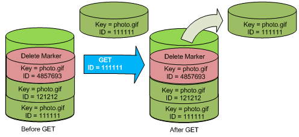
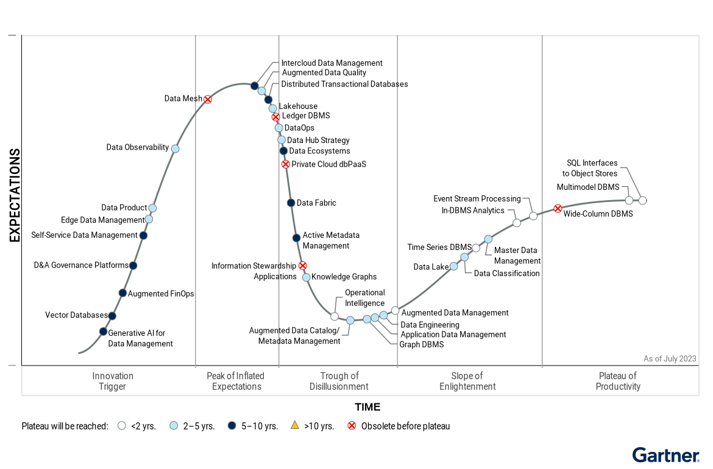
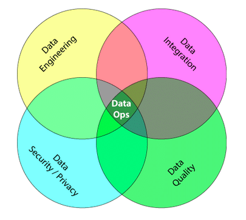

Big Data and Cloud Platforms (Module 2)
Towards data platforms
How did we get here?

From descriptive to prescriptive analytics
Case study: photo gallery

Data platform
Database (Özsu 2018)
“A database is a structured and persistent collection of information about some aspect of the real world organized and stored in a way that facilitates efficient retrieval and modification. The structure of a database is determined by an abstract data model. Primarily, it is this structure that differentiates a database from a data file.”

Data platform
Schemaless databases
There is no predefined schema the data must conform to before it’s added to the database. As a result, you don’t need to know the structure of your data, enabling you to store all your data more easily and quickly.

Data platform
Data lake (Couto et al. 2019)
“A DL is a central repository system for storage, processing, and analysis of raw data, in which the data is kept in its original format and is processed to be queried only when needed. It can store a varied amount of formats in big data ecosystems, from unstructured, semi-structured, to structured data sources”

Data platform

Data lake
Data lakehouse
Data lakehouse
- Data management architecture that combines the flexibility, cost-efficiency, and scale of data lakes with the data management and ACID transactions of data warehouses, enabling business intelligence (BI) and machine learning (ML) on all data
Key technologies used to implement Data Lakehouses
- Databricks’ Delta Tables
- Apache Hudi
- Apache Iceberg

https://databricks.com/blog/2021/05/19/evolution-to-the-data-lakehouse.html
Data lakehouse

Towards data lakehouse
Data governance
Data governance is everything you do to ensure data is secure, private, accurate, available, and usable
- It includes the actions people must take, the processes they must follow, and the technology that supports them throughout the data life cycle
- Every organization needs data governance since industries proceed on their digital-transformation journeys
A data steward is a role that ensures that data governance processes are followed and that guidelines are enforced, and recommends improvements to data governance processes.

Data provenance

Characteristics of data provenance (Simmhan et al. 2005)
Data provenance
Data provenance, an example of data management
- Metadata pertaining to the history of a data item
- Pipeline including the origin of objects & operations they are subjected to
- We have a standard: PROV-DM

Data provenance
Entity
- Physical/conceptual things
Activity
- Dynamic aspects of the world, such as actions
- How entities come into existence, often making use of previously existing entities
Agent
- A person, a piece of software
- Takes a role in an activity such that the agent can be assigned some degree of responsibility for the activity taking place

Data provenance: fine grained vs coarse grained


Data versioning
Version control
- A class of systems responsible for managing changes to computer programs, documents, or data collections
- Changes are identified by a number/letter code, termed the revision/version number
However, data pipelines are not only about code but also about
- Model Version control
- Data Version Control
- Model Parameter Tracking
- Model Performance Comparison

Data versioning
Support CRUD (Create, Read, Update, Delete) operations with versions
For example, on AWS (PUT, GET, DELETE)



What about updating?
Compression
Data compression is the process of encoding information using fewer bits than the original representation
- Lossless: reduces bits by identifying and eliminating redundancy
- No information is lost in lossless compression
- Examples?
- Lossy: reduces bits by removing less important information
- Examples?
Summarization: find a concise representation of a dataset in a comprehensible informative manner
Transaction dataset
TID Products T1 Beer, Diapers, Cola T2 Cola, Fanta T3 Beer, Cola T3 Beer, Diapers Frequent itemset mining
Itemset 1: {Cola}
Itemset 2: {Beer}
Itemset 3: {Beer, Diapers}

Data profiling
Data profiling (Naumann 2014)
- A broad range of methods to efficiently analyze a given data set
- E.g., in a relational scenario, tables of a relational database are scanned to derive metadata, such as data types, completeness and uniqueness of columns, keys and foreign keys, and occasionally functional dependencies and association rules

Data profiling
The results of data profiling are computationally heavy to discover
- E.g., discovering keys/dependencies usually involves some sorting step for each considered column
Verification of constraints on combinations (groups) of columns in a database
Complexity: how many combinations (groups of columns)?
Given a table with columns \(C = \{w, x, y, z\}\)
| w | x | y | z |
|---|---|---|---|
| 1 | 1 | 2 | 2 |
| 1 | 2 | 1 | 4 |

- To extract the (distinct) cardinality of each column, I will consider \(\binom{|C|}{1}=|C|\) columns \(\{(w), (x), (y), (z)\}\)
- To extract the correlations between pairs of columns, I will consider \(\binom{|C|}{2}\) groups \(\{(w, x), (w, y), (w, z), (x, y), ...\}\)
- Extracting the relationships among all possible groups of columns generalizes to \(\sum_{n=1}^{|C|}\binom{|C|}{n}=2^{|C|}−1\) groups
Entity resolution
Entity resolution (Papadakis et al. 2020)
- (also known as entity matching, linking)
- Find records that refer to the same entity across different data sources (e.g., data files, books, websites, and databases)


Data catalog
A data catalog is an organized inventory of the data in your company (Olesen-Bagneux 2023)
- The data catalog provides an overview at a metadata level only, and thus no actual data values are exposed.
- You can let everyone see everything without fear of exposing confidential or sensitive data.

Data catalog
Meta-data is organized into domains
A domain is a group of entities sharing knowledge, goals, methods of operation, and communication

Data fabric: example from Cloudera

Cloudera SDX
Data fabric
It is a design concept
- It optimizes data management by automating repetitive tasks
- According to Gartner estimates, 25% of data management vendors will provide a complete framework for data fabric by 2024 – up from 5% today


Gartner (2021). Data fabric is key to modernizing data management
Data fabric
Active metadata is a way of managing metadata that leverages open APIs to connect all services in your data platform and ferry metadata back and forth.
Active metadata is always on
- Automatically and continually collect metadata from various sources and steps of data flow — logs, query history, usage statistics.
Active metadata is “intelligent”:
- Constantly process metadata to connect the dots and create intelligence from it.
- E.g., auto-classify sensitive data, automatic suggestions to document a data asset’s description, send alerts about critical issues.
Active metadata is action-oriented
- Active metadata should drive actions such as curating recommendations and generating alerts
Active metadata is open by default
- Active metadata use APIs to hook into every piece of the data platform.

Gartner (2021). Data fabric is key to modernizing data management
Data mesh vs data fabric

Data mesh vs data fabric
Data mesh


As new technologies and solutions mature to support a centralized approach to data access, distributed approaches like Data Mesh are expected to fall increasingly out of favor in enterprise IT.
(Some) References


“Example” of architecture

https://xkcd.com/2347/
(*) “Ormai sta xkcd é una base troppo usata” A. Tappi
Data platform: expertise and related job positions

(Big) data pipeline
From DevOps…
DevOps combines development and operations to increase the efficiency, speed, and security of software development and delivery compared to traditional processes.
DevOps practices enable software development (dev) and operations (ops) teams to accelerate delivery through automation, collaboration, fast feedback, and iterative improvement

DevOps
https://about.gitlab.com/topics/devops/ (accessed 2023-06-03)
… to DataOps
DataOps refers to a general process aimed to shorten the end-to-end data analytic life-cycle time by introducing automation in the data collection, validation, and verification process

DataOps
From DevOps to DataOps
- “A collaborative data management practice focused on improving the communication, integration and automation of data flows between data managers and data consumers across an organization”
- Data analytics improved in terms of velocity, quality, predictability, and scale of software engineering and deployment
Some key rules
- Establish progress and performance measurements at every stage
- Automate as many stages of the data flow as possible
- Establish governance discipline (governance-as-code)
- Design process for growth and extensibility


Gartner, 2020 https://www.gartner.com/smarterwithgartner/how-dataops-amplifies-data-and-analytics-business-value
Andy Palmer, 2015 https://www.tamr.com/blog/from-devops-to-dataops-by-andy-palmer/
William Vorhies, 2017 https://www.datasciencecentral.com/profiles/blogs/dataops-it-s-a-secret